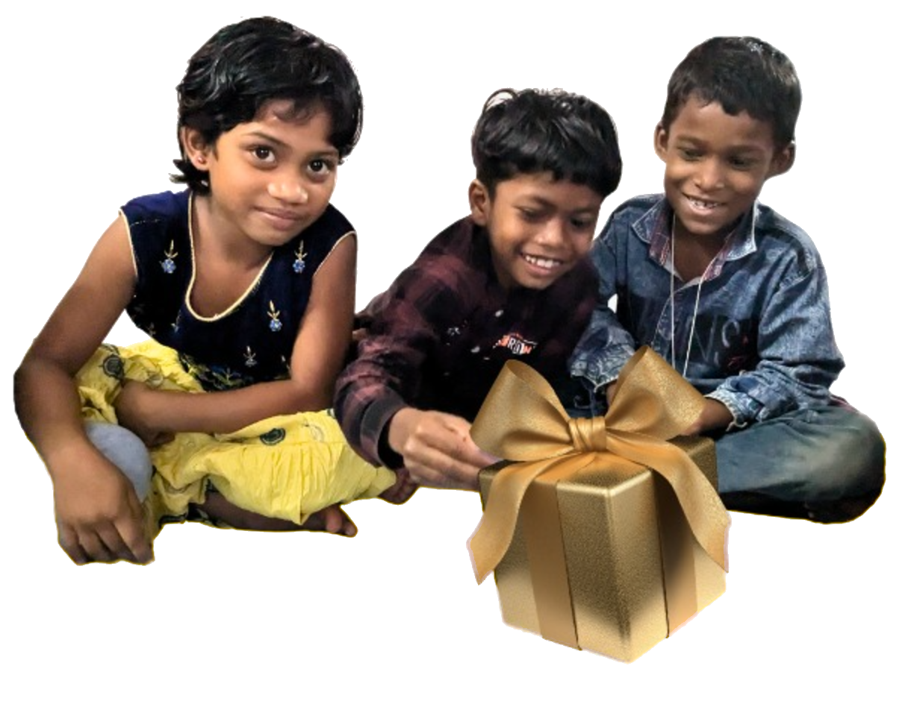

Grace Home is het gezinshuis van een Indiase familie met wie we al 15 jaar samenwerken.
Zij vangen kansarme (wees)kinderen op en geven hen zorg, voedsel, een liefdevol thuis en onderwijs.
Wil je structureel helpen? Steun maandelijks of sponsor een kind
Doe jij mee?